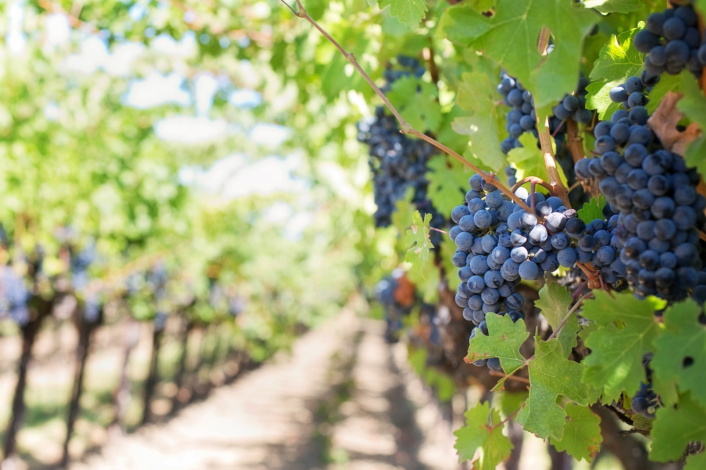

Definisi
Kebun dalam pengertian di Indonesia adalah sebidang lahan, biasanya di tempat terbuka, yang mendapat perlakuan tertentu oleh manusia, khususnya sebagai tempat tumbuh tanaman.
Pengertian kebun bersifat umum karena lahan yang ditumbuhi tumbuhan secara liar juga dapat disebut kebun, asalkan berada di wilayah permukiman. Dalam keadaan demikian, kebun dibedakan dari hutan dilihat dari jenis dan kepadatan tumbuhannya. Dalam ungkapan sehari-hari, kebun sering kali digunakan untuk menyebut perkebunan (seperti "kebun karet" atau "kebun kelapa") terutama bila ukurannya tidak terlalu luas dan tidak diusahakan secara intensif komersial. Kata kebun juga dipakai untuk menyebut pekarangan dan taman. Kebun dapat merupakan suatu pekarangan, tetapi tidak selalu demikian. Keseluruhan atau sebagian kebun dapat ditata menjadi taman.
Kebun dapat dipadankan secara baik dengan orchard dalam bahasa Inggris. Kebun dengan pengertian demikian adalah suatu usaha pertanaman pohon atau semak secara monokultur, tetapi bukan terna, untuk menghasilkan bahan pangan. Lahan bagi kebun demikian ini telah dikenal sejak dulu, seperti kebun pala di Maluku dan berbagai kebun buah-buahan di berbagai tempat di Nusantara (seperti kebun durian, duku, rambutan, dan salak). Kebun dalam pengertian di Indonesia biasanya tidak memiliki sistem budidaya yang intensif dan sekadar menjadi tempat untuk menumbuhkan tanaman serta pengumpulan hasil panen. Tidak ada fasilitas penyortiran atau pengemasan yang tersedia di lahan tersebut. Di luar negeri, kebun apel, jeruk, pisang, dan zaitun diusahakan secara intensif dan dapat dikatakan sebagai perkebunan.